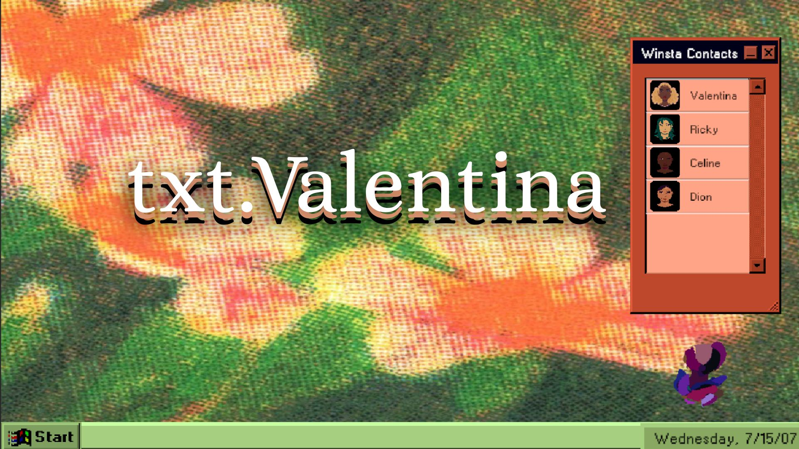
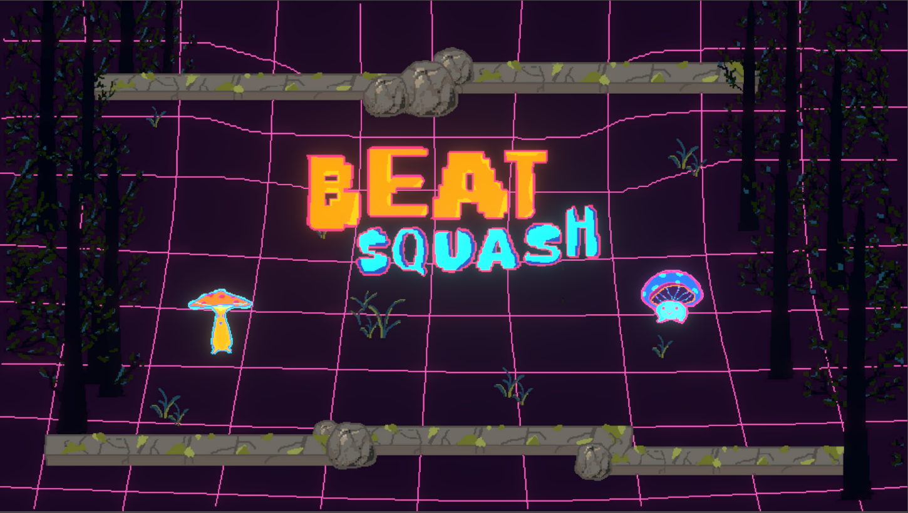
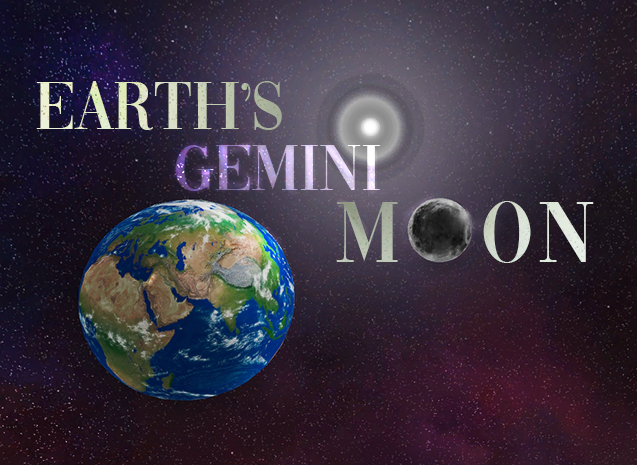
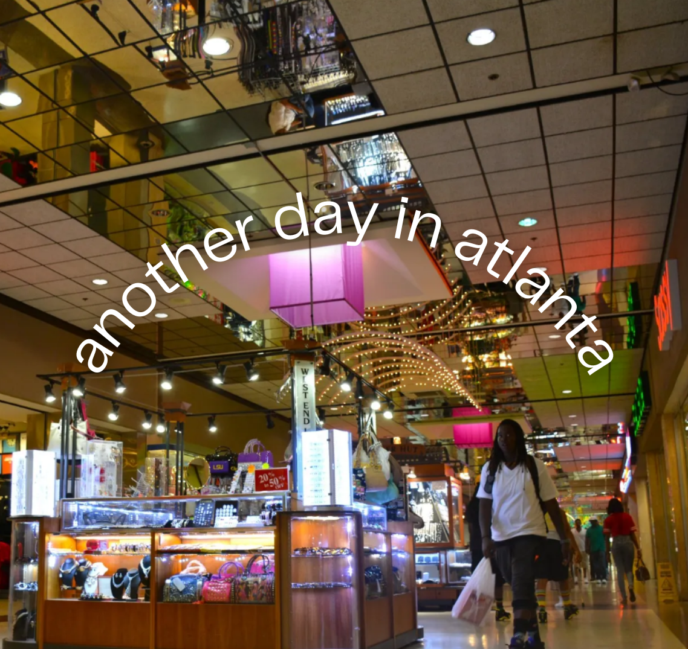
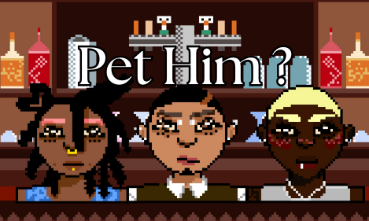
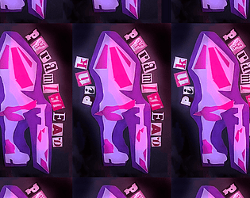
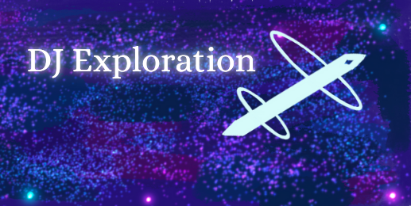
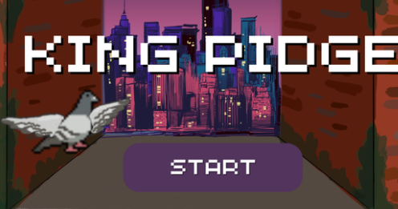

New York University TISCH School of the Arts: NYU Game Center

txt.Valentina (2025)
Genre: Queer, Horror, Chat-Based
Designed by Alex Tang, Selah Wright, Ethan Troxell, and Whit Walton
Developed in 3 weeks for Narrative Studio, txt.Valentina follows a shy girl and her manic pixie girl dream as they exchange texts over the course of 2 days. Depending on your answers, there are 3 routes to endure: girl failure, fizzle out, or standing up.
Created with Unity, Ink, and Aesprite, Whit was a writer and asset curator for the game, as well as character artist.

Beat Squash (2025)
Genre: Rhythm, Co-Op, Cute
Designed by George Eltzroth, Xingyu Qin, and Whit Walton
Developed in 2 weeks for Game Studio I, Beat Squash is a two-player rhythm game, where players alternate between hitting the ball on beat. After successfull volleys, the song dynamically adds more elements such as drums, bass, and vocal notes.
Created with Unity, Aesprite, Serato, and FL Studio, Whit was the audio engineer, animator, and voice actor.
Showcased at NYU Game Center Winter Showcase 2025.

Earth's Gemini Moon (2025)
Genre: Queer, Physics, Romance
Designed by Whit Walton
Developed in 2 weeks for Game Studio I, Earth's Gemini Moon explores the avoidant attachment style between the Moon and Earth. With slow pacing and witty humour, the player meets other celestial bodies as it uncovers its true feelings. Based on a true story.
Created with Unity, Whit was the developer, narrative writer, and audio engineer.
Showcased at NYU Game Center Winter Showcase 2025.

another day in atlanta (2025)
Genre: Queer, Interactive Fiction, HBCU
Designed by Whit Walton
Developed in 2 days for Narrative Studio,
Created with Inform 7, Whit was the narrative writer and developer.

Pet Him? (2025)
Genre: Queer, Mouse-Only, Cute
Designed by Whit Walton
Developed in 2 weeks for Game Studio I,
Created with Unity and Aesprite, Whit was the artist, audio engineer, and developer.

Pink Pyramihead (2025)
Genre: Horror, Walking Sim, Jumpscare
Designed by Whit Walton
Developed in 2 weeks for Game Studio I, Pink Pyramihead is a walking simulator heavily inspired by Silent Hill 2 (Konami). Walk through an eerily foggy and abandoned town with mysterious sounds coming from the buildings. Warning: there is a jump scare.
Created with Unity and Audacity, Whit was the audio engineer, environmental artist, and voice actor.
Uptown 1 (2025)
Genre: Puzzle, Interactive Fiction, Sci-Fi
Designed by Whit Walton
Developed in 2 weeks for Narrative Studio, Uptown 1 is an Interactive Fiction game about esacping from your reality in a small West Harlem apartment. With the use of binary code and heavy inspiration from The Matrix (1999), find your way out of perceived reality. Or stay within the bounds of your mind.
Created with Inform 7, Whit was the narrative writer and developer.
Featured on the Interactive Fiction Database
DJ Exploration (2025)
Genre: Music, Flatgame, Cyberpunk
Designed by Whit Walton
Developed in 1 week for Game Studio I, DJ Exploration is a flatgame where you can explore the inner workings of my mind. Begin in the binary world of 0 and 1 of the DJ controller, then travel upwards to see the CPU running the program until finally reaching outerspace. This game features text in English and Mandarin Chinese, with a mix of London club music and Atlanta rapper beats.
Created with GameMaker, Serato, and Procreate, Whit was the sound mixer, artist, and developer.
Personal Projects
DJ Apocalypse (2025)
Genre: Music, Rhythm, Zombie
Designed by Whit Walton
Developed over the summer of 2025, DJ Apocalypse is a rhythm game inspired by my top interests: djing and zombies. Imagine a world where the undead have started to appear. The only way to survive? By being a (zombie) killer DJ!
Created with Unity, Serato, and Procreate, Whit was the sound mixer, artist, and developer.
View a demo of the game.
Spelman College: Arthur M. Black Spelman Innovation Lab
MUSE (2025)
Genre: Queer, VR, HBCU
Designed by Miya Scaggs, Kendi King, and Whit Walton
Developed over 9 months, MUSE is a 360° interactive film created for the Spelman Innovation Lab Fellowship 2024-25. Players are allowed to "choose their own adventure" as they immerse in this queer college film exploring intersectional themes of Black womanhood, queerness, and identity through the lens of theatre and Glitch feminism.
Created with Unity, Insta360, and LogicPro, Whit was the production designer, VR programmer, and score composer.
Showcased at Spelman College Research Day 2025.
View a sizzle of the game.

King Pidge (2024)
Genre: One-Shot, Platformer, 24-Hours
Designed by Miya Scaggs, Reice Griffen, Temple Dees, and Whit Walton
Developed in 24 hours, King Pidge was created for the 2024 HBCU Game Jam at Spelman College. Play as Pablo "The Notorious P.I.G." Pigeon, Mob boss of the Gentlebirds, as he fights off Walter the Trash Monster to steal bread for his family.
Created with Unity and Procreate, Whit was the art lead, character designer, and senior developer.
Winner of Best Art (Non-AI) at the 2024 HBCU Game Jam.
Midnight Lavender (2023)
Genre: Queer, Puzzle, HBCU
Designed by Kyleigh Brown, Briana Fewell, Kendi King, and Whit Walton
Developed in 24 hours, Midnight Lavender was created for the 2023 HBCU Game Jam at Spelman College. It is a 3D open world mystery/puzzle game about an insecure First year at an all-women's HBCU. As she grapples with her queer sexuality and closeted girlfriend, supernatural forces throw her back in time to the 1950s Atlanta University Center.
Created with Unity and Procreate, Whit was the art lead, character designer, and voice actor.
Winner of Best Art at the 2023 HBCU Game Jam.
Showcased at Spelman College Research Day 2023.
View a trailer of the game.

Chinese Racing Game (2022)
Genre: Educational, Mandarin, Car
Designed by Whit Walton
Developed in 2 months, Chinese Racing Game was created for Game Development I under the direction of Dr. Jerry Volcy and Dr. Richard Lu. With the intention to teach non-Chinese speakers Mandarin Chinese, players navaiagte a car to hit the correct character with the English translation.
Created with Unity and Procreate, Whit was the artist, voice actor, and developer.
Showcased at Spelman College Research Day 2023.